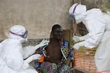

1. Mapa dos países africanos. Localize os países no mapa e pinte-os conforme o idioma do colonizador. Essa cor deverá ser a mesma da legenda. Atenção: há alguns países sem o nome no mapa, mas estão na tabela. Coloque seus nomes no mapa.
Madagascar, Congo, Gabão, República Centro – Africana, Chade, Níger, Benin, Burkina Faso, Costa do Marfim, Guiné, Mali, Senegal, Mauritânia, Argélia, Marrocos e Djibuti
Inglaterra
Egito, Sudão, Uganda, Quênia, Nigéria, Gana, Serra Leoa, Malaui, Zâmbia, Zimbabue, Botsuana, África do Sul, Suasilândia e Lesoto.
Itália
Somália, Líbia e Eritreia.
Portugal
Angola, Guiné Bissau e Moçambique.
Independente
Etiópia e Libéria.
2. É bom saber:
A segunda metade do século XIX foi marcada pela divisão dos territórios africanos pelas potências imperialistas europeias durante a Conferência de Berlim (1884-1885)
A expansão do capitalismo industrial europeu exigia novas fontes de matérias-primas e acirrava a disputa pelo controle da África.
Até hoje, a África sofre com as sequelas deixadas pelo imperialismo europeu: guerra civil, pobreza, fome, epidemias, dependência de ajuda internacional.
• Após a leitura, explique o processo de colonização da África e suas consequências.
3. Faça ligação entre sujeito e predicado das orações, sendo coerente com o fato histórico:
a. Transnacionais
é o transmissor da doença do sono, que causa paralisia e morte.
b. África Subsaariana
é habitado por beduínos, povos nômades, originários da Península Arábica.
c. Deserto de Saara
são indústrias que atuam em solo africano, controlam a produção e ficam com a renda gerada pela exploração de recursos.
d. Tsé-Tsé
apresenta baixíssimo IDH, mais de 30% dos subsaarianos.
4. Coloque nos parênteses a letra correta dos fatos históricos:
O processo de descolonização provocou rivalidades entre blocos socialistas e capitalistas da África e Ásia. Estados Unidos e União Soviética apoiaram independência para estabelecer influência política e econômica sobre os nascentes países.
No pós-guerra, o domínio imperialista europeu na Ásia e Europa passou a ser sistematicamente questionado. A Organização das Nações Unidas (ONU) defendia a igualdade entre os países e sua Carta das Nações Unidas queria saber “qual a melhor forma de conceder a eles autonomia política, econômica e social.
Os movimentos de libertação do norte da África aconteceram em decorrência da consciência nacional.
O processo foi marcado por violentos conflitos entre os colonos franceses e a força de libertação.
Era um movimento também contra o racismo e não simplesmente uma luta contra a dominação “total” da África.
(A) Guerra da Argélia.
(B) A descolonização da África Subsaariana
(C) O processo de descolonização
(D) A guerra fria na descolonização
(E) A independência do norte da África.
5. Complete as frases, conforme leitura da tabela abaixo:
o fim do colonialismo português na África.
Movimento de Libertação de Angola (MPLA) - Frente Nacional de Libertação de Angola (FNLA) e União Nacional pela Independência Total de Angola (UNITA) - ambos anticomunistas.
tendência comunista - regime socialista inspirado na China e nos países do leste europeu.
movimento de separação entre brancos e negros, que proibia, entre outras coisas, as relações sexuais e o casamento entre brancos e não brancos (negros, indianos, mestiços).
o principal líder do Congresso Nacional Africano (CNA), - preso durante vinte e sete anos.
país mais rico e desenvolvido do continente, ganhou destaque no cenário internacional e muitos bilhões de dólares com a Copa do Mundo em 2010.
a. A Revolução dos Cravos- em 1974, em Portugal – colaborou com...
b. A Frente de Libertação de Moçambique (Frelimo -1962) tinha uma , no entanto, em 1975, foi implantado um
c. Em Angola, a luta pela independência foi travada por três grupos rivais:
, e
d. Nelson Mandela era o , ficou
e. O apartheid foi um
f. Apesar dos problemas, a África do sul é o
6. Um grande problema de saúde que atinge, hoje, alguns países africanos ( Libéria, Serra Leoa, Nigéria) é o vírus Ebola. O que você sabe sobre ele? O Brasil já registrou essa ocorrência?6. Um grande problema de saúde que atinge, hoje, alguns países africanos ( Libéria, Serra Leoa, Nigéria) é o vírus Ebola. O que você sabe sobre ele? O Brasil já registrou essa ocorrência?

7. Nosso país recebeu forte influência na língua e usos e costumes dos africanos. Pesquise no celular: